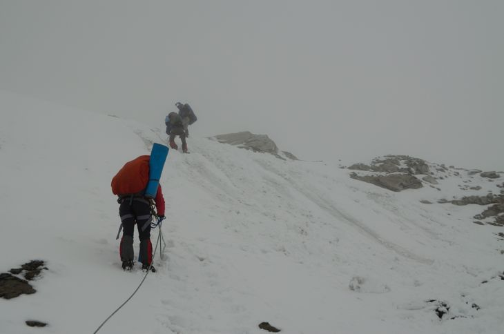

Рис. sg_ascend. Спуск от вер. Signalgipfel к выполаживанию под вер. Gamsspitzl по хребту. Маршрут спуска показан примерно!
Первал Seescharte расположен в Штубайских Альпах вблизи главного водораздела к северо-востоку от вершин Wilder Friger и Signalgipfel. Высота перевала 2762 метра. Координаты перевала: 46°58'56.42" СШ, 11°12'37.01" ВД. Перевал соединяет долину реки Sulzenaubach с долиной Langental, которые выходят к долине Stubaital. Сложность прохождения перевала летом соответствует категории 1А.
Перевальный склон ориентирован по направлению юго-запад – северо-восток. Характеры склонов сведены в таблицу slope
На перевал (с перевала) ведут три пути:
| cклон | характер склона | крутизна (°) | высота (до пологого участка, м) |
|---|---|---|---|
| cеверо-восток | скально-осыпной, снежник под седловиной (обходится по тропе) | 45(максимальная), 30 (характерная) | 100 |
| юго-запад | скально-осыпной, скально-травянистый | 35 (характерная) | 250 |
Седловина перевала выпуклая, с большим количеством камней. На седловине установлены указатели и столб с инсталляцией, посвященной вершине Wilder Fraiger и леднику Wilderfrigerferner.
Рис. arch. Седловина пер. Seescharte.
Подходящее место для лагеря вблизи перевала можно искать в долине озера Grünausee (возможно, около небольших озер, находящихся севернее), при этом следут выбирать место так, чтобы лагерь не был виден с тропы. Эвакуироваться в экстренных ситуациях необходимо в одну из двух хижин – либо Nurenbergerhütte, либо Sulzenauhütte. От обеих хижин к долине Stubaital, по которой ходят автобусы до Инсбрука, ведут набитые тропы.
Концевыми точками маршрута являлись вершина Signalgipfel и озеро Grunausee. В начале спуска погодные условия были весьма жесткими – был ветер, снег и ограниченная видимость.
Спуск с вершины Signalgipfel на первом этапе представляет собой движение в связках с ледорубами по закрытому леднику с небольшим количеством поперечных трещин, проходящему рядом с гребнем. В конце ледового участка спуска есть крутой (35°.) участок высотой около 40 м, где необходимо либо провесить веревку, либо спускаться на три такта.

Рис. nord_ice_slope. Крутой участок ледника на спуске с Signalgipflel.
После ледового участка движение продолжается по скальному гребню, по которому идет тропа (рис. sg_ascend). Сняв кошки, необходимо продолжать движение в связках для повышения безопасности.
Рис. sg_ascend. Спуск от вер. Signalgipfel к выполаживанию под вер. Gamsspitzl по хребту. Маршрут спуска показан примерно!
Спустившись с гребня, тропа выводит на выполаживание под вер. Gamsspitzl. На выполаживании есть место для установки лагеря (рис. sg_ascend), защищенное от ветра и содержащее источник воды. После выполаживания тропа раздваивается – одна из троп ведет к вершине, а другая ведет траверсом склона к седловине перевала Seescharte.
К выполаживанию мы вышли в сумерках и установили на нем лагерь. Встав на следующий день с утра пораньше, мы продолжили свой путь к Sulzenauhütte. К счастью, погода была отличная, и всю округу было видно как на ладони.
Спуск к седловине перевала продолжился по тропе, идущей траверсом склона. На ней в некоторых местах нам пришлось прибегнуть к гимнастической страховке.
От седловины нам предстоял спуск по узкой тропе, ведущей серпантином вниз по подвижному скально-осыпному склону (~100 метров, 45°). Двигались осторожно плотной группой, не допуская нахождения одного участника над другим.
Спуск с седловины занял около часа. После спуска начался пологий участок с тропой до озера Grünausee, не представляющий каких-либо трудностей.
Таким образом, для прохождения перевала от выполаживания под вершиной Gamsspitzl к Sulzenauhütte либо Nürnbergerhütte туристам необходимо использовать самостраховку на скальных-осыпных и скально-травянистых склонах, которая может быть осуществлена с помощью ледорубов. Спуск либо подъем к вершине Wilder Friger (либо Signalgipfel) требует использования связок на участках пути, пролегающих по гребню и закрытому леднику. Для движения по леднику, кроме того, необходимы ледорубы и кошки.